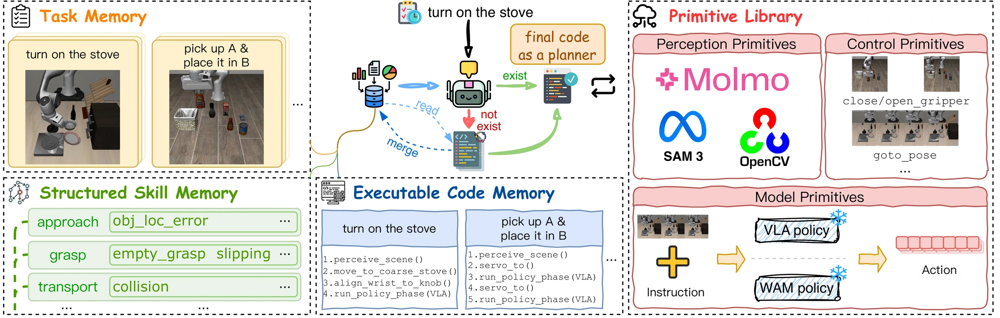
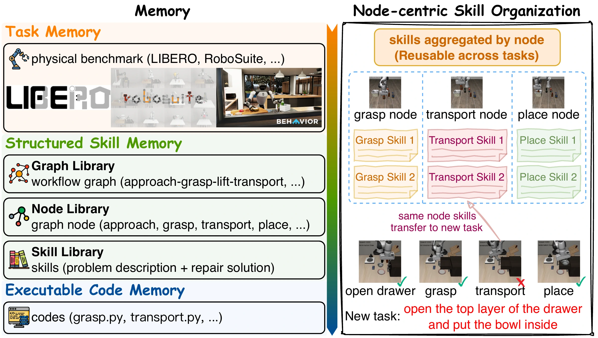
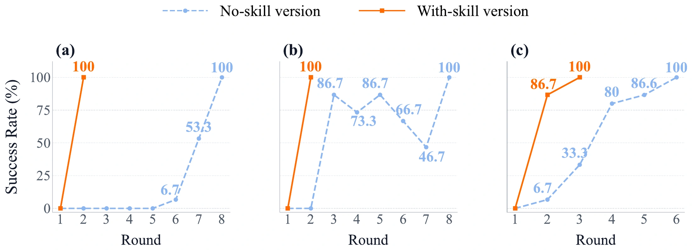
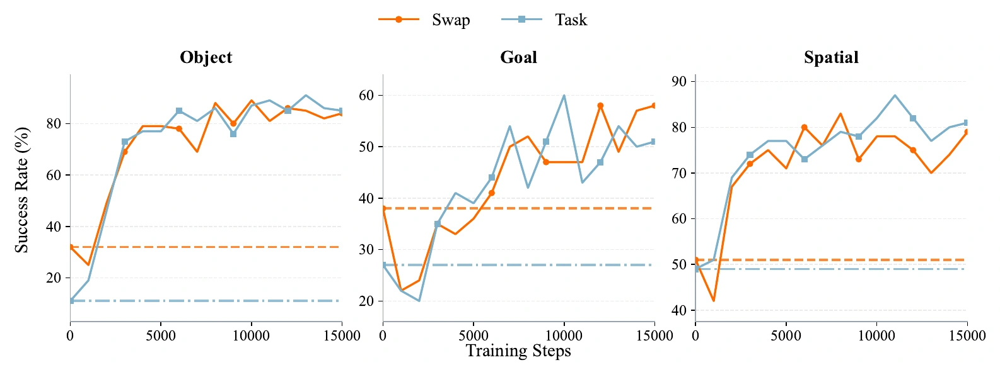
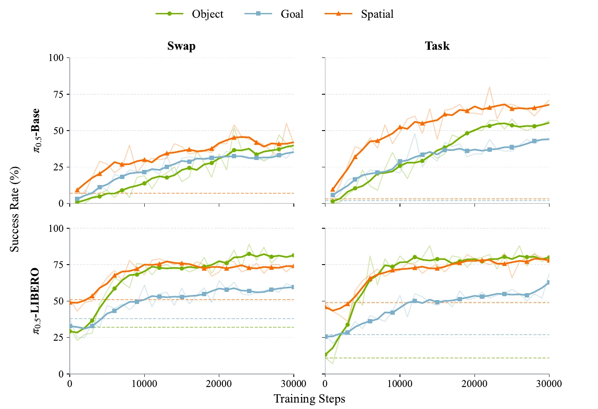
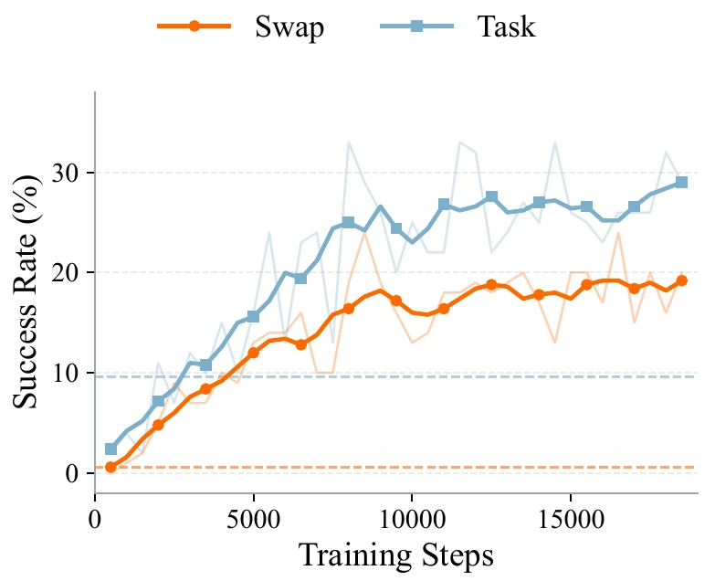
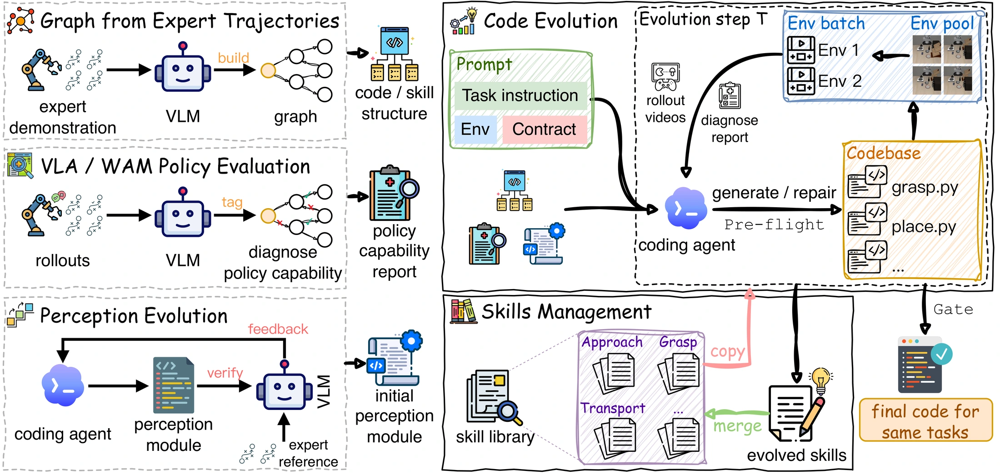

<HarnessPAI/>: An evolvingharness for physical AI
Evolving executable code integrates perception, reasoning, and action,
and feeds successful trajectories back into model training.
Background: an action model is not a complete agent
Why do visual grounding and instruction following become bottlenecks?
Motivation: use existing motor skills in the right way
What should a harness add while the action model stays frozen?
Method: code as a harness, evolving on two timescales
Why stable execution? How do we verify, repair, and reuse programs?
Experiments: benchmark gains and data feedback
How well does the harness work, and can its trajectories improve the model?
A complete physical agent must perceive, understand, and act.
Perceive & ground
Where are the objects?
What has changed?
Understand & reason
Which object is intended?
What constraints must hold?
Act & control
How should the robot move?
How is contact handled?
VLA · Vision-Language-Action
Maps visual observations and instructions to actions.
WAM · World Action Model
Also models how the world evolves with actions.
SAME ACTION BACKBONE · π0.5
High success is not
robust understanding.
LIBERO-PRO perturbs familiar tasks to test whether a policy can re-ground its actions when layouts or instructions change.
Exchange initial object positions.
Task · instruction perturbationChange the instruction and intended target.
Task success Higher is better · %
Aggregated over Spatial, Object, and Goal suites.
A standard-versus-perturbed comparison, not a causal training ablation.
Pick up the black bowl
not between
the plate and the ramekin.
- The added negation changes the target.
- The VLA still grasps the original bowl.
- The harness re-grounds the target before invoking motor skills.
grasping the right bowl.
The manuscript also shows a masking intervention that does not resolve this case.
Same instruction.
A new destination.
- Grasping and transport still happen.
- The VLA moves toward the plate’s old position.
- The harness re-locates the destination in the current scene.
not just relearn how to move.
The wrong object
A valid motion, but the wrong referent.
The wrong destination
Grasp and transport succeed; grounding does not.
Near the button is not on the button
Reaching the vicinity does not complete the press.
If the model can still reach, grasp, and transport,
how do we make it act correctly after a perturbation?
Re-ground the goal
Resolve the instruction
in the current scene
Invoke existing skills
Retain the frozen model’s
atomic motor competence
Verify before advancing
Check grasp and placement;
gate the next stage
Precondition: useful primitives already exist. A harness cannot create a capability absent from both the model and available control APIs.
| Design | Who decides next? | Learned motor skills | Main trade-off |
|---|---|---|---|
| Pure VLA / WAM | Action model | Retained | Grounding and checks often implicit |
| Online reasoning harness | High-level agent | Retained | Repeated online deliberation |
| Code as Policy | Program + control APIs | Not necessarily retained | Contact-rich control depends on APIs |
| Code as Harness | Validated task program | Replaceable primitives | Upfront evolution; repeated reuse |
Do not replace the action model
Code organizes grounding and checks.
The model supplies learned manipulation.
Do not rethink every step
Reuse an executable strategy.
Move program revision between rollouts.
Executable
RUN THE STRATEGY
Connect perception, action calls, and branches—not just a plan in words.
observe → act → checkInspectable
LOCATE THE FAILURE
Make object selection and stage transitions readable and editable.
if not grasped: stopEvolvable
REPAIR AND REUSE
Map failures to nodes, revise their implementation, and re-validate.
failure → patch → testReuse programs and repair knowledge—not an assumption of unlimited physical resets or guaranteed zero-shot success on every new task.
The action model is one primitive in the system—not the whole agent.

Is a reusable program already available?
How to repair; where the implementation lives.
Perception, control, VLA / WAM / PPO.
def execute(instruction, robot, action_model):
scene = perceive(robot.observe())
target = ground(instruction, scene)
destination = locate_destination(scene)
robot.approach(target.pose)
action_model.grasp(target)
if not verify_grasp(robot.observe()):
return safe_stop()
robot.transport(destination)
action_model.place(destination)
return verify_goal(robot.observe())Explicit objects and poses
Resolve the task in the current scene.
Retain learned actions
Freeze weights; do not hand-code all contact.
Gate execution
No verified grasp, no blind transition to transport.
There is no reliable
“undo” button.
- A bad grasp can drop or overturn an object.
- After the scene changes, recovery may be impossible within the rollout.
- Reasoning after failure may already be too late.
This is an illustration, not a pure-WAM baseline or a RoboCasa comparison.
A physical mistake cannot always be fixed by undoing a line of code.
Bad grasp / collision
Object falls or spills
The rollout may be lost
During this run: prevent the error
- Ground targets and geometric constraints.
- Gate progress with predefined checks.
- Recover or stop within defined policies.
Before the next: repair the program
- Locate weak nodes from execution evidence.
- Validate fixes in resettable experiments.
- Deploy only a validated candidate.
One rollout
Program Pk is fixedNo online program rewriting. Perception and low-level feedback remain active.
Between rollouts
Pk → Pk+1Code and repair knowledge evolve; action-model parameters θ stay frozen.
Ground
Targets and poses
Approach
Reach the object
Grasp
Establish contact
Transport
Move geometrically
Place
Complete placement
Transport only after verify_grasp succeeds
Failed check → predefined recovery or stopping.
Not an invitation for the high-level LLM to rewrite the program mid-run.
Explicit constraints, geometry, control, and checks.
Learned manipulation where atomic skills are useful.
Extract a task graph
Recover stage order from successful video or a related task.
approach → grasp → placeAssess model capability
Observe each node and decide where code should help.
good / needs code / mixedInitialize perception
Organize SAM / Molmo and other primitives as the task needs.
scene → grounded targetsA full human expert trajectory is not required. The graph supplies stage structure; every configuration enters the same execution–diagnosis–repair loop.
Generate / repair
Edit an isolated candidate;
protect validated programs.
Pre-flight
Check interfaces and execution;
separate bugs from policy failures.
Targeted probe
Recheck 3 previously failing seeds;
test the intended repair first.
Full regression batch
Run every contracted suite / episode;
look for new and recurring failures.
Diagnose + gate
Use node-wise video diagnosis;
apply authoritative success criteria.
Synthesize the next step
Failed: revise again.
Passed: promote code; distill skills.
Stop when all contracted development rollouts pass or the budget is exhausted. Failed candidates retain diagnostics but do not enter the verified code library.
C = scope + authoritative goal + terminal state + non-success signals
The writer, diagnoser, and reviewer all receive the same contract.
Code writer
Repairs the candidate and
synthesizes the next revision.
Independent video diagnoser
Explains where failures occur
relative to workflow nodes.
Deterministic gate
Checks the authoritative goal
over the contracted scope.
Observed failure: a grasped object moves toward the plate’s old position.
P₀ · stale destination
destination = stored_pose
place(destination)Locate the problem in grounding and placement—not “the action model is bad.”
P₁ · re-ground the scene
scene = observe()
destination = locate_plate(scene)Add perception and geometry while retaining useful action primitives.
P₂ · check the final relation
place(destination)
verify_object_on_plate()Recheck failures, run full regression, then promote only if validated.
Code library · executable knowledge
Validated task programs, control logic, and maintained repair implementations.
Skill library · repair experience
Problem → Repair → Code reference
Index skills by grasp / transport / place nodes, not just a flat collection of notes.
retrieve by node, reuse the repair.

An entire new task program is not necessarily reusable unchanged.

A sharp gain after resolving a blocking error.
Edits can introduce regressions.
Local corrections build on one another.
Can evolving code improve task performance?
Can successful rollouts improve model weights?
| Benchmark / setting | Embodiment & backend | Reported evaluation |
|---|---|---|
| robosuite | Single / dual arms · GraspNet | 7 tasks × 100 evaluation seeds |
| LIBERO / LIBERO-PRO | Desktop arm · π0.5 VLA | 30 base / 60 perturbed tasks × 50 seeds |
| RoboCasa · Atomic-Seen | Mobile manipulator · WorldDreamer WAM | 18 tasks × 20 seeds |
| BEHAVIOR-1K | Humanoid upper body + mobile base · GraspNet | 2 household tasks × 25 evaluation seeds |
| VacuSim / MicroDuck | Robot vacuum · control API / legged robot · PPO | Floor coverage / lateral error & goal distance |
LIBERO-PRO · π₀.₅
3 suites × 2 perturbations · 60 tasks
Backbone and harness evaluated by the authors
ROBOCASA · WORLDDREAMER
Atomic-Seen · 18 tasks
Same WorldDreamer; unified evaluation setting
The same evolved task program serves Base, Swap, and Task conditions.
| Method | Object | Goal | Spatial | Mean | |||
|---|---|---|---|---|---|---|---|
| Swap | Task | Swap | Task | Swap | Task | ||
| π0.5 · frozen VLA | 29.8 | 10.8 | 37.6 | 29.0 | 51.8 | 50.6 | 34.9 |
| ASPIRE | 98.0 | 95.0 | 81.0 | 45.0 | 51.0 | 60.0 | 71.7 |
| Harness VLA · CC | 90.0 | 88.0 | 87.0 | 87.0 | 80.0 | 94.0 | 87.7 |
| HarnessPAI · π0.5 | 98.6 | 99.2 | 94.6 | 97.8 | 93.8 | 95.2 | 96.5 |
50 seeds per task, including 15 evolution seeds. Harness VLA uses 10 seeds per task; the comparison to prior harnesses is across reported protocols.
| Method | 2A-Hand | 2A-Lift | Insert | Lift | Stack | Restack | Wipe | Mean |
|---|---|---|---|---|---|---|---|---|
| CaP-Agent0 | 20 | 74 | 0 | 97 | 98 | 89 | 100 | 68.3 |
| Human | 91 | 94 | 80 | 93 | 73 | 47 | 100 | 82.6 |
| ASPIRE | 92 | 71 | 9 | 97 | 99 | 100 | 99 | 81.0 |
| HarnessPAI | 100 | 91 | 83 | 100 | 100 | 100 | 100 | 96.3 |
FINE INSERTION · INSERT
9% → 83%+74 pp over ASPIRE on precise alignment
BIMANUAL LIFT · 2A-LIFT
71% → 91%+20 pp over ASPIRE on two-arm coordination
One program per task; evolution on seeds 101–125, evaluation on disjoint seeds 1–100. GraspNet supplies the grasp primitive.
| Setting | Metric / comparison | Reported result |
|---|---|---|
| BEHAVIOR-1K · radio | Task completion: zero-shot → adapted | 84% → 100%Navigation: 100% |
| BEHAVIOR-1K · soda can | Task completion: zero-shot → adapted | 72% → 92%Navigation: 92% |
| VacuSim · furnished 25 × 25 | Floor coverage: initial → evolved policy | 11.72% → 53.92% |
| VacuSim · unfurnished 40 × 40 | Floor coverage: initial → evolved policy | 4.90% → 63.76% |
| MicroDuck · straight-line walking | Lateral drift over 4 m of forward progress | Up to 0.8 m → near zero |
BEHAVIOR adaptation uses eight rounds on previously failing test seeds. Coverage is specific to each VacuSim map; MicroDuck reports trajectory error.
Replace only the action-model calls
| LIBERO-Object perturbation | Original DreamZero | Zero-shot harness transfer |
|---|---|---|
| Swap | 0.6% | 73.4% |
| Task | 9.6% | 84.4% |
Not every model is a drop-in replacement. Interface compatibility and primitive competence still constrain the benefit.
LIBERO-PRO provides no demonstrations for its perturbed variants.
A converged harness supplies successful observation–action trajectories.
Converged harness
Roll out in Base,
Swap, and Task scenes
Success filtering
Retain trajectories that
pass the task success gate
VLA / WAM learner
Supervised fine-tuning
on observations and actions
Base : Swap : Task = 1 : 1 : 1
Three-suite mixture: 9 equally sampled categories
Seeds 0–39 · training trajectories
Seeds 40–49 · held-out evaluation
The evaluated feedback flows from harness to model. The converged programs are not re-evolved against the fine-tuned checkpoint.

| Swap / Task mean | Object | Goal | Spatial |
|---|---|---|---|
| Original → fine-tuned VLA | 21.5% → 88.0% | 32.5% → 54.5% | 50.0% → 82.5% |
| Gain from harness data | +66.5 pp | +22.0 pp | +32.5 pp |
Separate suite models and best checkpoints; these three results are distinct from the full-mixture experiment. Training: seeds 0–39; test: 40–49.

π0.5-LIBERO
+38.8 percentage points
Harness trajectories further improve an already adapted VLA.
π0.5-BASE
No prior LIBERO fine-tuning;
harness rollouts supply the additional training data.
Nine categories sampled equally; train seeds 0–39, test 40–49. Reported scores use each starting checkpoint’s best step within the training budget.

reported checkpoint scores use the raw results
| Object | Original | Fine-tuned |
|---|---|---|
| Swap | 0.6% | 24.0% |
| Task | 9.6% | 29.0% |
| Mean | 5.1% | 26.5% |
Mean gain in the standalone WAM
Object Base / Swap / Task mixed 1:1:1; train seeds 0–39, test 40–49. This is a model update; the earlier zero-shot transfer keeps DreamZero frozen.
Favorable conditions
- Useful atomic model or control primitives.
- Observable, checkable intermediate stages.
- Repeated tasks that allow program reuse.
- Controlled trials during development.
Remaining boundaries
- Organization cannot create absent skills.
- Opaque long-horizon stages are harder to repair.
- Fixed code and checks are not a safety proof.
- Different protocols are not controlled ablations.
ObservationStrong motor behavior can coexist with brittle grounding and task understanding.
MethodExecute fixed programs, evolve between rollouts, and reuse node-level repairs.
BenchmarksLIBERO-PRO: 34.9% → 96.5%; RoboCasa: 65.0% → 92.2%, with frozen backends.
Data feedbackSuccessful trajectories improve π0.5 by 38.8 pp and DreamZero by 21.4 pp.
Physical AI = Perception + Reasoning + Action + Executable Organization
| Experiment | Development / training | Evaluation | Interpretation |
|---|---|---|---|
| LIBERO / PRO | Evolve on seeds 0–14 | 50 seeds, including those 15 | Not wholly unseen seeds |
| robosuite | Evolve on seeds 101–125 | Seeds 1–100 | Disjoint development / evaluation |
| RoboCasa Atomic | Fixed-layout evolution | 18 tasks × 20 seeds | Obstacles and distractors vary |
| BEHAVIOR-1K | Initially evolve on 26–35 | Zero-shot on seeds 1–25 | Then adapt on failing test seeds |
| VLA / WAM fine-tuning | Seeds 0–39 | Seeds 40–49 | Separate from main harness tests |
| Mean time per rollout | Harness VLA · serial | HarnessPAI · serial | Speedup |
|---|---|---|---|
| Swap | 1134.9 s | 49.2 s | 23.1× |
| Task | 978.1 s | 53.2 s | 18.4× |
What disappears at runtime
After selecting a program, execution does not require step-by-step high-level LLM deliberation.
What still costs resources
Code evolution, perception, action-model inference, control, and simulation or physical execution.
Timing covers the full execution loop. The paper separately reports a 7-GPU parallel setting; its extra speedup is not attributed solely to code here.
